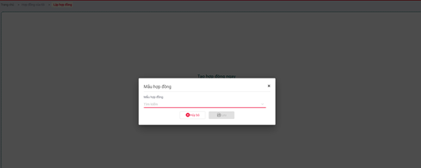
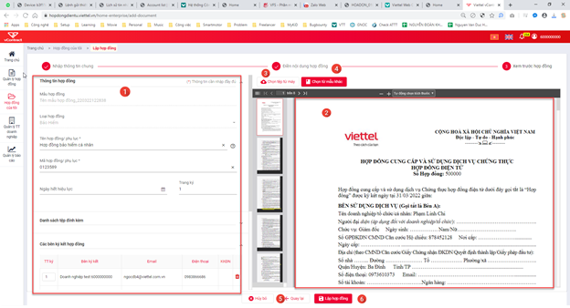
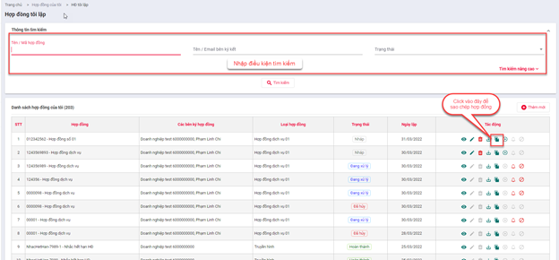

Chi tiết công việc từng hệ thống
Lập hợp đồng
Lập hợp đồng bao gồm hai hình thức: Chọn tệp từ máy hoặc Chọn từ mẫu
Lập hợp đồng Chọn tệp từ máy
Mục đích: Tạo hợp đồng bằng cách khai báo thông tin chung và upload fiel hợp đồng đã lưu thành công ở dạng pdf
Điều kiện: Người dùng có quyền thao tác ở đơn vị
Các bước thực hiện:
- Bước 0: Tại màn hình Trang chủ, bấm chọn Hợp đồng của tôi àLập hợp đồng >> Chọn nút “Chọn tệp từ máy”

- Bước 1: Hệ thống hiển thị popup chọn file trên thiết bị. Lưu ý: chỉ chọn file pdf
- Bước 2: Sau khi tải file thành công. Hệ thống hiển thị màn hình Nhập thông tin chung

Trong đó:
Nhập thông tin chung:
Bao gồm:
- Loại hợp đồng: bắt buộc chọn, chọn từ danh sách các loại hợp đồng của hệ thống
- Hợp đồng cha đã ký (nếu có): điền thông tin hợp đồng cha.
- Tên hợp đồng/phụ lục: đây là tên của hợp đồng đang lập.– bắt buộc nhập
- Mã hợp đồng/phụ lục: đây là mã của hợp đồng đang lập – bắt buộc nhập, không được nhập trùng, không có khoảng trắng
Danh sách tệp đính kèm: tải các tệp đính kèm - Chỉ chấp nhận tập tin PDF (*.pdf) và tập tin hình ảnh (*.jpg, *.png, *.bmp).
Các bên ký hợp đồng: Thiết lập các bên thực hiện ký kết hợp đồng, có 1 bên lập và nhiều bên khách hàng. Phải có ít nhất 1 đối trượng ký hợp đồng.
- Nhập đúng số giấy tờ/Mã số thuế của bên ký kết để hệ thống suggest thông tin
Thiết lập luồng duyệt – ký hợp đồng nội bộ: yêu cầu thiết lập thành viên trong nội bộ thực hiện ký, sẽ có nhiều người duyệt nhưng chỉ có 1 người ký.
- Nhập đúng email để suggest thông tin thành viên.
- Bước 3: Sau khi điền thông tin và thiết lập luồng ký ở bước 2. Bấm Tiếp theo >> Chuyển đến màn hình

Trong đó:
1) Thông tin chung của hợp đồng – đã nhập ở bước 2. Có thể chỉnh sửa 1) Xem trước hợp đồng – đây là bản xem trước hợp đồng đã upload 1) Nút Chọn hợp đồng khác >> Bấm vào để thực hiện chọn hợp đồng khác để thay thế hợp đồng đã upload ở bước 1 1) Nút Chọn từ mẫu khác >> Bấm vào để thực hiện chọn mẫu khác để thay đổi hình thức lập hợp đồng sang Chọn từ mẫu 1) Nút Quay lại >> Bấm đẻ quay lại màn hình bước 2 1) Nút Lập hợp đồng >> Bấm để thực hiện Lập hợp đồng - Bước 4: Bấm Lập hợp đồng >> Thực hiện lưu hợp đồng ở trạng thái Nháp
Lập hợp đồng Chọn từ mẫu
Mục đích: Tạo hợp đồng bằng cách chọn từ mẫu có sẵn của hệ thống, người dùng chọn mẫu à Hệ thống bind các thông tin cần điền. Sau khi điền thông tin sẽ xuất file hợp đồng để thực hiện ký
Điều kiện: Người dùng có quyền thao tác ở đơn vị
Các bước thực hiện:
- Bước 0: Tại màn hình Trang chủ, bấm chọn Hợp đồng của tôi àLập hợp đồng à Chọn nút “Chọn từ mẫu”

- Bước 1: Hệ thống hiển thị popup chọn mẫu hợp đồng. Người dùng thao tác chọn mẫu đã có bấm Lưu

- Bước 2: Sau khi chọn mẫu thành công, hệ thống hiển thị màn hình Nhập thông tin chung

Trong đó:
Nhập thông tin chung:
Bao gồm:
- Mẫu hợp đồng: hiển thị tên mẫu hợp đồng đã chọn ở bước 1
- Loại hợp đồng: hiển thị loại hợp đồng của mẫu đã chọn
- Tên hợp đồng/phụ lục: đây là tên của hợp đồng đang lập– bắt buộc nhập
- Mã hợp đồng/phụ lục: đây là mã của hợp đồng đang lập – bắt buộc nhập, không được nhập trùng, không có khoảng trắng
Danh sách tệp đính kèm: tải các tệp đính kèm - Chỉ chấp nhận tập tin PDF (*.pdf) và tập tin hình ảnh (*.jpg, *.png, *.bmp).
Các bên ký hợp đồng: Thiết lập các bên thực hiện ký kết hợp đồng, có 1 bên lập và nhiều bên khách hàng. Phải có ít nhất 1 đối trượng ký hợp đồng.
- Nhập đúng số giấy tờ/Mã số thuế của bên ký kết để hệ thống suggest thông tin
Thiết lập luồng duyệt – ký hợp đồng nội bộ: yêu cầu thiết lập thành viên trong nội bộ thực hiện ký, sẽ có nhiều người duyệt nhưng chỉ có 1 người ký.
- Nhập đúng email để suggest thông tin thành viên.
- Bước 3: Sau khi điền thông tin và thiết lập luồng ký ở bước 2. Bấm Tiếp theo >> Chuyển đến màn hình Điền nội dung hợp đồng

Hệ thống tự động bind thông tin theo mẫu cấu hình, người dùng thực hiện điền thông tin hợp đồng tại cột Giá trị của bảng tại Tab Điền thông tin và tính toán
Bấm Quay lại để chuyển bước 2
Sau khi điền thông tin bấm Tiếp theo để đến bước 4
- Bước 4: Hiển thị màn hình Xem trước hợp đồng

Trong đó:
1) Thông tin chung của hợp đồng – đã nhập ở bước 2. Có thể chỉnh sửa 1) Xem trước hợp đồng – đây là bản xem trước hợp đồng đã được map từ file mẫu của mẫu và các giá trị thông tin điền ở bước 2 1) Nút Chọn hợp đồng khác à Bấm vào để thực hiện chọn hợp đồng khác thay đổi hình thức lập hợp đồng sang Chọn tệp từ máy 1) Nút Chọn từ mẫu khác à bấm vào để thực hiện chọn mẫu khác 1) Nút Quay lại à Bấm đẻ quay lại màn hình bước 2 1) Nút Lập hợp đồng à Bấm để thực hiện Lập hợp đồng - Bước 4: Bấm Lập hợp đồng >> Thực hiện lưu hợp đồng ở trạng thái Nháp
Chỉnh sửa hợp đồng
Mục đích: Chỉnh sửa hợp đồng đã lập ở trạng thái Nháp
Điều kiện: Người dùng có quyền thao tác ở đơn vị
Các bước thực hiện:
- Bước 1: Tại Menu danh mục Hợp đồng của tôi à Chọn Hợp đồng tôi lập. Hệ thống hiển thị màn hình Hợp đồng tôi lập

- Bước 2: Chọn hợp đồng và bấm nút Chỉnh sửa. Tuỳ hợp đồng được chọn lập theo hình thức Chọn tệp từ máy hay Chọn từ mẫu hệ thống sẽ hiển thị ra màn hình tươngứng
- Nếu Chọn tệp từ máy >> Chuyển Màn hình bước 3
- Nếu Chọn từ mẫu >> Chuyển đến Màn hình bước 1
- Bước 3: Các bước tiếp theo tương tự khi Lập hợp đồng
Sao chép hợp đồng
Mục đích: Sao chép một hợp đồng đã có thành hợp đồng mới, cho phép clone thông tin của hợp đồng được sao chép để chỉnh sửa
Điều kiện: Người dùng có quyền thao tác ở đơn vị
Các bước thực hiện:
- Bước 1: Tại Menu danh mục Hợp đồng của tôi >> Chọn Hợp đồng tôi lập. Hệ thống hiển thị màn hình Hợp đồng tôi lập

- Bước 2: Chọn hợp đồng và bấm nút Sao chép. Tuỳ hợp đồng được chọn lập theo hình thức Chọn tệp từ máy hay Chọn từ mẫu hệ thống sẽ hiển thị ra màn hình tương ứng
Nếu Chọn tệp từ máy >> Chuyển Màn hình bước 3 và có nút Chọn tệp từ máy để chọn file hợp đồng

Nếu Chọn từ mẫu >> Chuyển đến Màn hình bước 1, các thông tin ở màn hình bước 1 và màn hình bước 2 được giữ nguyên như sao chép.
- Bước 3: Các bước tiếp theo tương tự khi Lập hợp đồng